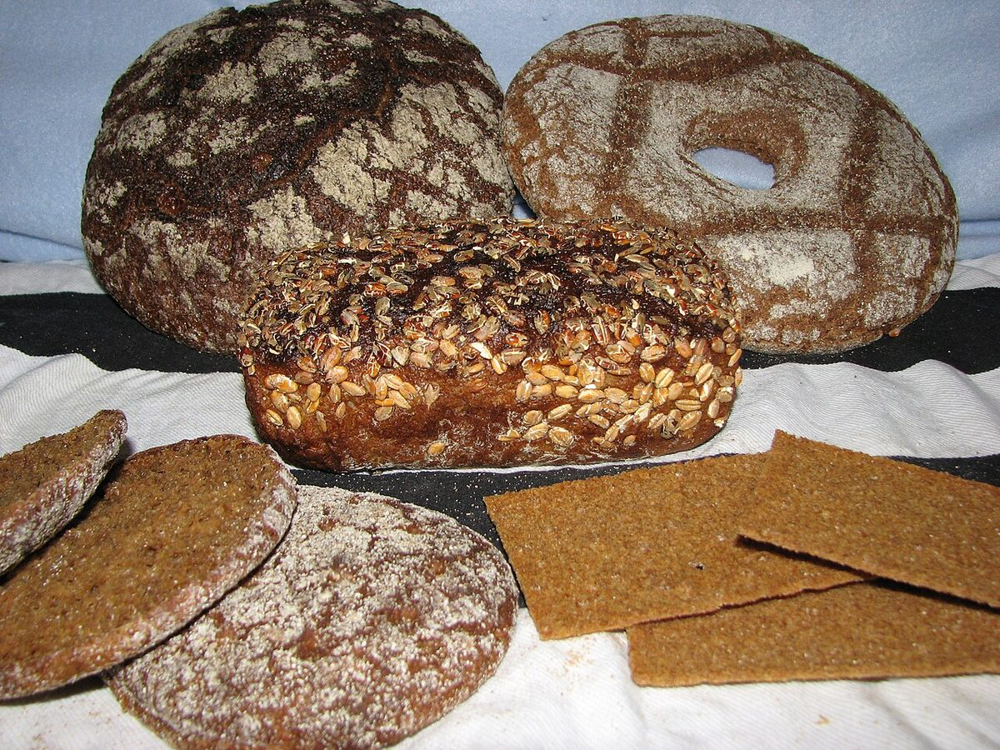
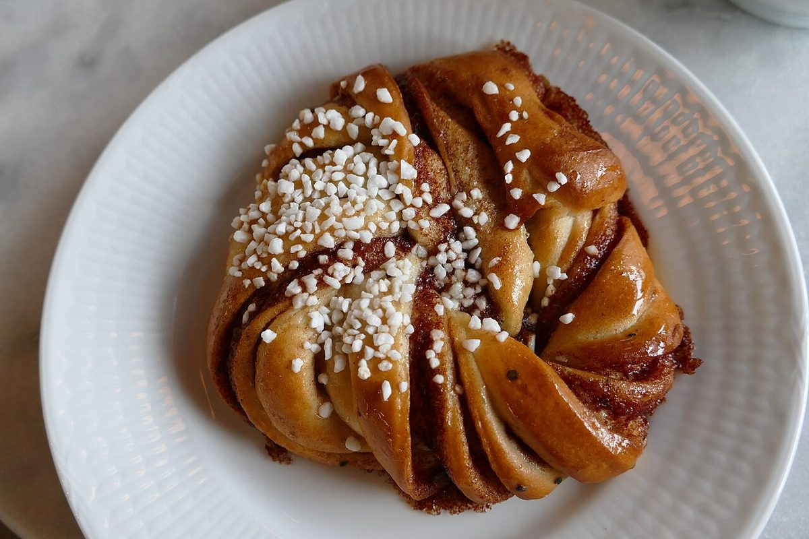
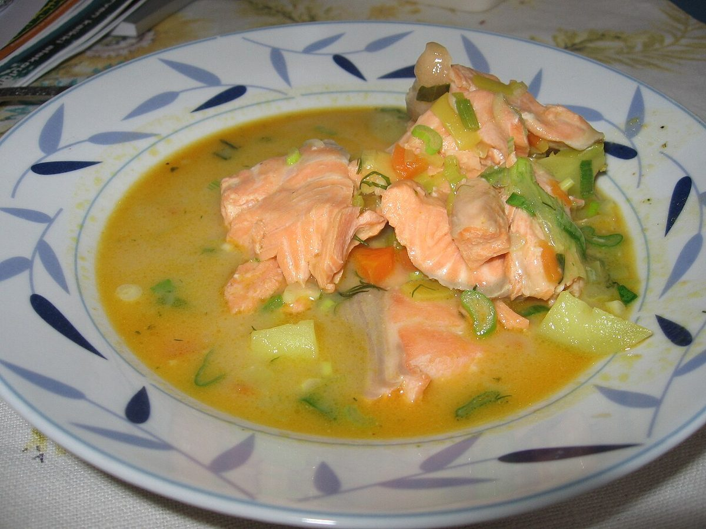
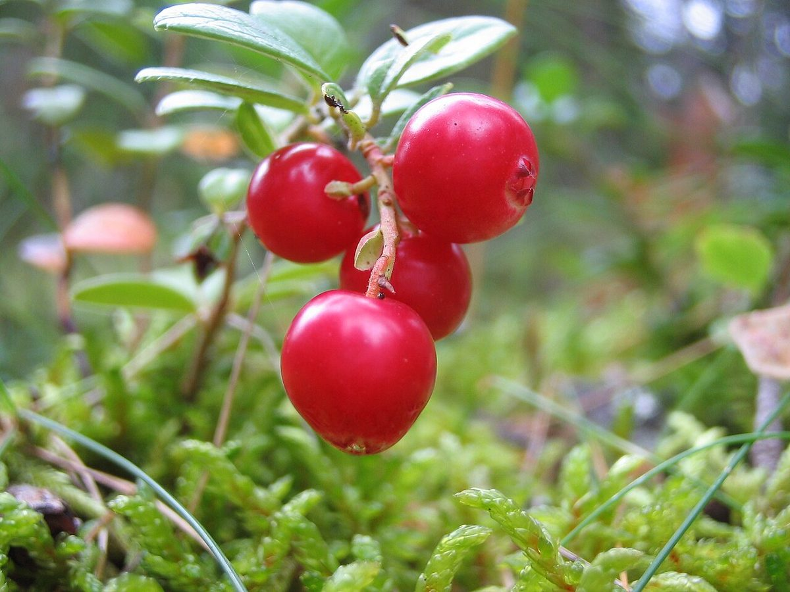
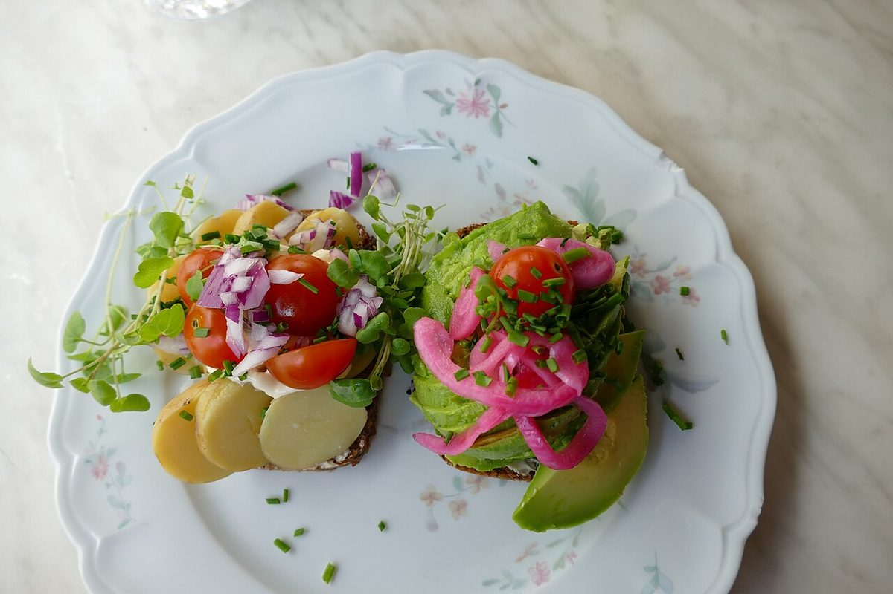

キートス
カフェ / 千葉県君津市
デリカフェ・キートス
千葉県君津市中島にあるカフェ「デリカフェ・キートス」のご案内ページです。営業時間やメニューなど、詳しいことは準備中。まずはInstagramをのぞいてみてください。

連想
制作側の連想
「キートス」から考えたこと
店名の由来は分かりません。制作側は「キートス」という響きから、フィンランド語で「ありがとう」を意味する言葉を連想しました。そこでこのページは、北欧の旗の「中心からずれた十字」を借りて、画面を縦と横の線で区切る作りにしています。十字の左側に見出し、右側に中身を置く、という決まりごとです。お店の理念や由来とは無関係の、制作側の連想です。
四区画
十字で区切る四つの区画(イメージ)
パン・スープ・ベリー・ひと皿
写真は国外・撮影地不明のフリー素材のイメージです。お店で提供しているものを示すものではありません。




ご案内
ご案内
お店のこと(確認できたものだけ)
| 所在地 | 〒299-1106 千葉県君津市中島181-4 |
|---|---|
| 電話 | 0439-32-3326 |
| 営業時間 | 準備中 |
| 定休日 | 準備中 |
| ご予約 | 準備中 |
| 駐車場 | 準備中 |
| SNS | Instagram @deli_cafe_kiitos |